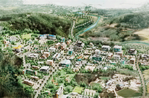

미래전략산업 및 신성장산업
- Home
- 전략산업
- 미래전략산업 및 신성장산업
개요
부산은 지속가능한 미래를 창출하기 위한 신성장동력으로써 융복합 산업 경쟁력을 강화하고자 합니다. IT, 조선·해양, 바이오, 로봇, 그린·에너지산업 등 미래전략산업분야에서 다양한 프로젝트를 진행하고 있습니다.
-

동남권 방사선 의 · 과학 산업단지 조성
-
 해상풍력단지 조성
해상풍력단지 조성 -
 세계 최고 수준의 석유 시추선
세계 최고 수준의 석유 시추선
육성산업
IT글로벌 경쟁력 강화
클라우드/사물인터넷 산업육성
- 클라우드 데이터 센터 시범단지 조성(미음지구) 및 유통기반 구축('14년~'18년) - BS 금융그룹 통합전산센터 건립(2개 동, 1,902억 원), 착공('15년 8월)
- 클라우드 클러스터 지정('15년) : 미음(플랫폼), 석대~센텀(서비스지구)
- 첨단 사물인터넷 실증단지 조성('15년~'17년) : 사물인터넷 테스트베드 구축('15년)
- ITU 포스트사업 : ITU 대학 유치, ITU Youth 센터 설치
부산의 성장동력 조선·해양사업 특화
조선·해양 플랜트산업 육성
- 해양 ICT융합 비즈니스 벨트 조성('16년~'20년)
- IoT(사물통신) 융합산업 육성기반 구축
- 심해 해양공학수조 착공, 해양플랜트 기자재 R&D센터 구축, 해양플랜트 엔지니어링 클러스터 조성 추진
- 조선기자재 성능고도화 기반구축, 조선해양플랜트 글로벌핵심센터 설립
- 해양플랜트 전문인력 양성, 해양플랜트 종사자 안전교육 등
- 부산항 신항 항만배후단지 66만㎡ 단지 조성 및 관련기업 유치('14년~'17년), 해양플랜트 기자재 및 모듈제작, 기자재 유통 등
부산만의 전략사업으로 일자리 창출
IT 융복합 산업기반 구축
- 첨단 IT융합산업 집적화 단지 조성('11년~'15년)
- ETRI(한국전자통신연구원) 부산분원 유치 분원설립 승인('15년 7월)
방사선 의·과학산업 육성
- 방사선 의·과학산업단지 조성('10년~'15년), 의료용 중입자가속기 개발('10년~'17년) : 치료센터 완공('15년 11월)
- 수출용 신형연구로 건설('10년~'18년) : 부지조성공사 완료('15년 4월), 방사성동위원소 융합연구 기반구축('15년~'19년)
- 원자력시설 해체기술 종합연구센터 설립('16년~'19년)
- 암 전문연구센터, 임상시험 글로벌 선도센터 등 의료산업 지원
- 항노화산업 인프라 구축 및 제품 개발 지원
신발·섬유산업 육성
- 고기능성, 과학적 검증, 신뢰 확보로 부산 신발산업의 세계적 명품화 육성
- 해양 융복합소재 산업화 사업 추진 등으로 글로벌 시장 선점
로봇산업 및 그린·에너지산업 육성
- 해양로봇 연구거점센터 구축('11년~'16년)
- 지역산업과 연계한 과제기획 등 로봇 융합 생태환경조성('15년)
- 신재생에너지 지역지원 사업(18개소), 해상풍력단지 조성('13년~'17년)
- 바이오 열병합 발전소 건설('15년~'17년)